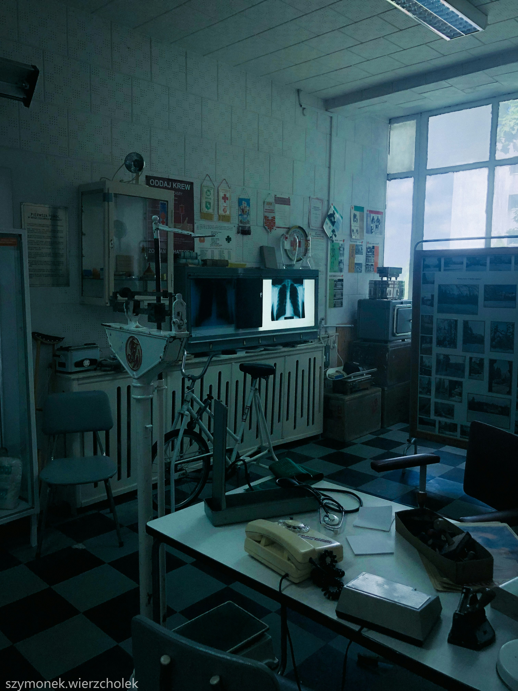
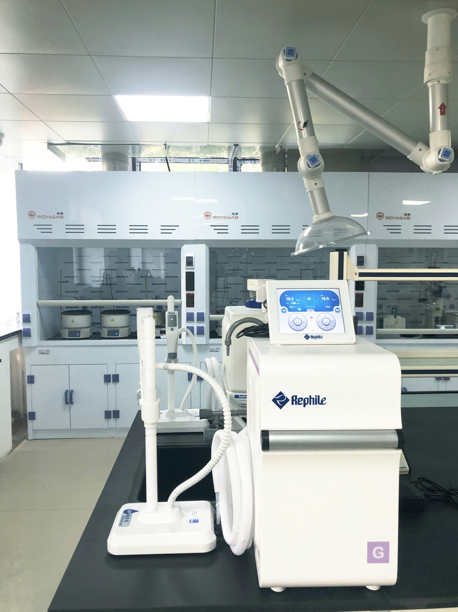

Radioprotezione e Sicurezza Radiologica
per Studi Dentistici e Veterinari
Conformità normativa garantita, sicurezza pazienti e staff, controlli periodici certificati secondo D.Lgs 101/2020 e Direttiva 2013/59/Euratom.
I Nostri Servizi
Soluzioni complete per la conformità normativa e la sicurezza radiologica
Controllo Radioprotezione
Verifiche periodiche e straordinarie per apparecchiature radiologiche in ambito odontoiatrico e veterinario. Garanzia di conformità al D.Lgs 101/2020.
Scopri di piùControllo Elettromedicali
Manutenzione preventiva e verifiche di sicurezza elettrica su tutti i dispositivi medici (IEC 62353), assicurando funzionalità e sicurezza per pazienti e operatori.
Scopri di piùDocumentazione e Conformità
Gestione completa della documentazione obbligatoria: registri di controllo, nomine esperti qualificati, relazioni tecniche e comunicazioni agli organi competenti.
Scopri di piùPerché la Radioprotezione è Critica?
Non è solo burocrazia: è la base per operare in sicurezza e legalità nel settore sanitario.
Rischi e Sanzioni
La mancata conformità comporta sanzioni penali e amministrative pesanti, oltre al rischio di sospensione dell'attività.
Obblighi Normativi
Rispetto rigoroso del D.Lgs 101/2020 e della Direttiva 2013/59/Euratom per la tutela della salute.
Sicurezza Persone
Protezione fondamentale per operatori, pazienti e pubblico contro i rischi delle radiazioni ionizzanti.
Responsabilità Legale
L'esercente è legalmente responsabile. Una gestione corretta è l'unica tutela in caso di contenziosi.
Settori di Specializzazione
Competenza verticale per esigenze specifiche

Odontoiatria
Precisione millimetrica per la diagnostica dentale
-
Radiografie Endorali
Verifica tubi radiogeni per RX periapicali e bitewing.
-
Ortopantomografia (OPT)
Controllo qualità e sicurezza per panoramiche dentali.
-
CBCT (Cone Beam)
Protocolli avanzati per tomografia computerizzata a fascio conico.

Medicina Veterinaria
Sicurezza adattata alle esigenze cliniche animali
-
Radiologia Digitale e Analogica
Controlli su sistemi RX fissi e portatili per animali.
-
Biosicurezza Radiologica
Procedure per contenimento e protezione durante esami su animali.
-
Fluoroscopia e Arco a C
Verifiche per sistemi di radiologia interventistica veterinaria.
Cosa Controlliamo?
Il nostro protocollo di verifica copre ogni aspetto della sicurezza radiologica. Dall'efficienza delle macchine alla protezione strutturale, nulla viene lasciato al caso per garantire la totale conformità al D.Lgs 101/2020.
Perché è fondamentale?
Un controllo accurato previene guasti, sovraesposizioni e sanzioni, proteggendo il tuo investimento e la tua reputazione professionale.
Dosimetria
Monitoraggio dell'esposizione alle radiazioni per il personale esposto e l'ambiente.
Schermature
Verifica dell'adeguatezza delle barriere protettive e dei DPI (camici, collari).
Apparecchiature Radiologiche
Controllo di costanza, tensione, corrente e tempi di esposizione dei generatori.
Sistemi di Protezione
Test su interblocchi, segnaletica luminosa e acustica di sicurezza.
Documentazione e Registri
Audit sulla corretta tenuta del registro macchine e delle schede dosimetriche.
Dicono di Noi
La tranquillità di chi ha scelto la sicurezza certificata
Dr. Roberto Magni
Centro Odontoiatrico Magni
"La gestione della radioprotezione era un incubo burocratico. Con Marco abbiamo non solo messo tutto in regola secondo il D.Lgs 101/2020, ma dormiamo sonni tranquilli sapendo che i controlli sono precisi e puntuali."
15 gennaio 2026
Dr.ssa Elena Visentin
Clinica Veterinaria San Marco
"Professionalità assoluta nel controllo delle nostre apparecchiature radiologiche. Le verifiche sono meticolose e le spiegazioni chiare. Un partner indispensabile per la sicurezza del nostro staff e dei pazienti animali."
20 novembre 2025
Dr. Paolo Verdi
Studio Odontoiatrico Verdi
"Ho richiesto un audit completo sugli elettromedicali e la radioprotezione. Servizio eccellente, report dettagliati e piena disponibilità. La competenza tecnica di Marco è evidente."
5 dicembre 2025

Dr.ssa Giulia Bianchi
VetLife Ambulatorio
"Finalmente qualcuno che conosce le specificità della radiologia veterinaria. I consigli sulle schermature e le procedure di sicurezza hanno migliorato notevolmente il nostro flusso di lavoro."
1 febbraio 2026
Risorse Utili per il Tuo Studio
Scarica le nostre guide gratuite per approfondire gli obblighi di radioprotezione e gestire al meglio la sicurezza.
Guida Radioprotezione Odontoiatrica
Vademecum essenziale sugli obblighi di legge e le buone prassi per lo studio dentistico.
Scarica PDFGuida Radioprotezione Veterinaria
Manuale operativo per la gestione del rischio radiologico nelle cliniche veterinarie.
Scarica PDFRimani Aggiornato
Iscriviti alla nostra newsletter per ricevere aggiornamenti normativi, consigli pratici e offerte esclusive per il tuo studio.